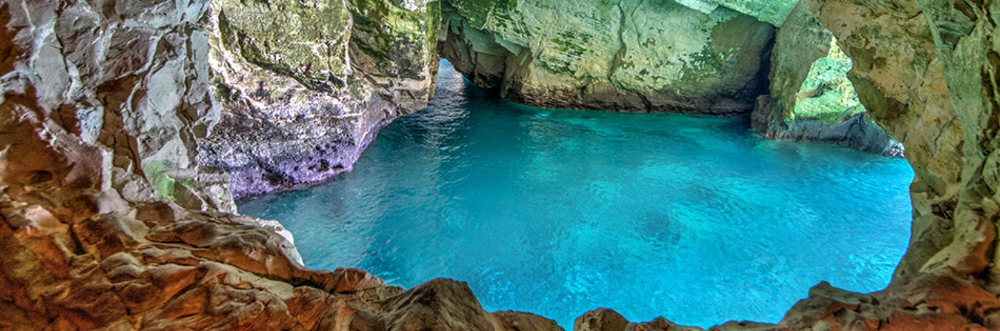

Rosh Hanikra caverns
Inside the waters of beautiful Rosh Hanikra National Park along the Lebanese border lies one of Israel’s most unusual and popular Mediterranean diving sites. Made of naturally formed sea caves and caverns flooded with turquoise waters, it is accessible by boat or from the beachfront. Though the site is mostly about exploring the natural topography, divers have been known to come across the occasional dolphin, seal and sea turtle along their journey. Another site in this area is Achziv Canyon, an underwater rift between Rosh Hanikra National Park and Achziv National Park in Nahariya. The site, ranging from 10 to 30 meters in depth, gives a wonderfully diverse look at Israel’s marine life, including corals, crabs, octopi, sea turtles and sea urchins.